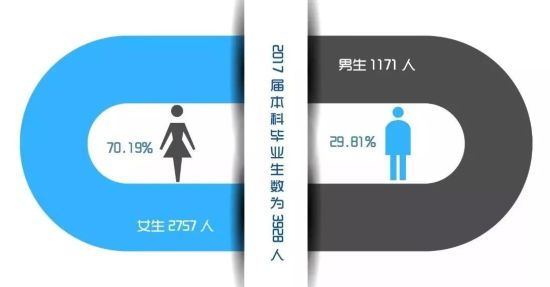

我向南京市人社局申请信息公开
今年1月份，南京审计大学发布了《2017届本科毕业生就业质量报告》。该校毕业生总数为3928人，男女比例接近3:7。在一项关于就业公平性的调查中，28%的毕业生认为自己在求职过程中遭遇了性别歧视。

看到这则消息的时候我在想，竟然有这么多学生在求职过程中遭遇了性别歧视，那么Ta们是否会选择向人社局投诉，维护自身的合法权益呢。带着这样的疑问，4月28日，我登陆南京市人民政府信息公开网，向南京市江宁区等11个区级人社局申请了信息公开。

作为一名就业性别歧视议题的关注者，我好奇自08年《就业促进法》生效以来，有多少 人向南京地区的人社局投诉或者举报过就业性别歧视问题，也想了解各区人社局对于这类举报或投诉的处理流程、处罚依据，为此我提出了以下3个申请公开的事项。
5月21日，浦口区人社局电话通知受理了我的申请，即将寄出纸质回复，至此南京市11个区的人社局均已履行了回复职责。溧水区等9个人社局按照我要求的形式提供了纸质回复，雨花台区等3个人社局直接在网上进行了答复。各区人社局答复我的时间如下：
受理就性别歧视投诉/举报情况
08年以来建邺区人社局受理就业性别歧视投诉/举报案件的数量最多，但也仅为5起，平均2年1起。雨花台区人社局13年收到了2起这类举报。玄武区和栖霞区分别收到过1起。对于这些举报，人社局均受理立案，进行了调查处理，并责令单位立即改正。涉案单位也均按要求进行改正，删除了性别歧视的招聘内容。浦口区等5个人社局表示近9年来，没有收到过用工单位在招聘中涉嫌性别歧视的投诉或举报。
人社局处理此类案件的主要依据
在各人社局回复第2条信息公开申请的内容中，9个人社局提到了《劳动保障监察条例》，6个人社局提到了《就业促进法》，这2个处罚依据被提及的次数最高。下图中颜色越浅代表提及次数越低。
2个拒绝公开信息的人社局
六合区人社局以第1项信息不属于政府信息，第2项和第3项信息不存在为由拒绝了我的申请。溧水区人社局拒绝公开第1项信息的理由与六合区类似，并以第2、3项信息属于主动公开的内容，已经在政府网站及相关渠道公开为由拒绝了我的申请。

目前，南京市各区人社局均表示依法受理就业性别歧视举报或投诉，劳动者如果发现用人单位在招用人员过程中存在性别歧视，可以采取到所属镇、街人社服务窗口、区劳动保障监察大队受理窗口，拨打12333、12345电话专线、登陆人社局劳动监察平台或者以信件的形式进行投诉或者举报。

总的来说，我对南京市各区信息公开的回复情况比较满意。但是对其提供数据的准确性有一些疑问。作为就业性别歧视议题的长期关注者，我曾向南京市各区人社局举报过当地招聘中存在性别歧视的企业，并收到了一些人社局的回复，为什么我的这些举报记录消失了？其次我感觉六合区人社局对这次信息公开申请的态度并不友好，其声称第2、3项内容不存在的说法令人难以接受。
二胎政策出台后，针对女性的招聘性别歧视愈演愈烈，但人社局每年受理的举报或投诉依然屈指可数。消除就业性别歧视不仅依靠观念的改变更是行为的改变，后者很有可能促成前者的改变，“只有参与到公共性的议题之中，个体的生活体验才有可能真正的改善”。